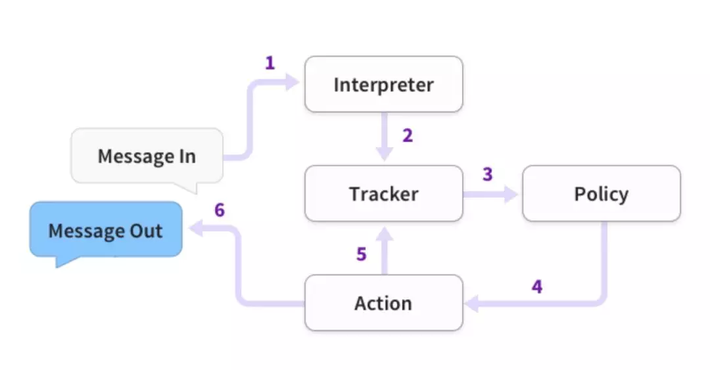
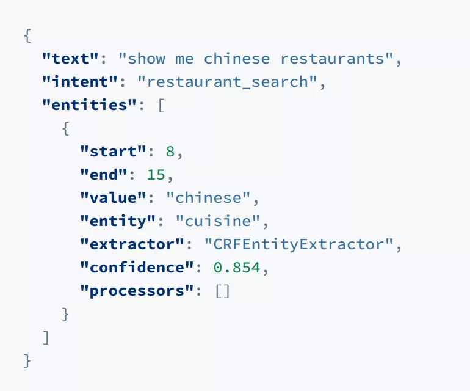

rasa（task bot）
所谓对话系统，是通过对话的方式，实现人机交互的一种方法。
Rasa是一家通过机器学习技术实现对话系统、机器人开发的工具，同时也是一家创业公司。
Rasa的组成
Rasa NLU
主要实现自然语言理解（即NLU）功能，本质上就是识别句子的意图和实体。
如“买一张去北京的票”，我们可以定义一个意图是“购票”，实体是“北京”和“一张”。
意图识别本质是短文本分类任务（当然在学术界可能称为Intent Detection来和Text Classification分开）。单纯短文本分类任务的SOTA基本上就是BERT了。
抽取本质是信息抽取任务。抽取的SOTA现在一般还是BiLSTM-CRF的各种变型，或BERT之类。
现在学术界的主要研究方向是多种工作结合，例如同一模型同时做意图识别和信息抽取，互相配合增加总体准确率。
Rasa的NLU，主要是当前的社区版，主要还是使用了各种开源技术，并没有追求学术上的SOTA。它使用的工具包括Spacy、sklearn-crfsuite
Rasa Core
这是Rasa的核心部分，NLU有各种实现，开源的也有snips nlu等，但是core却独一无二。
Rasa Core主要完成了基于故事的对话管理，包括解析故事并生成对话系统中的对话管理模型（Dialog Management），输出系统决策（System Action/System Policy）。
学术上一般认为这部分会包含两个模型
1、对话状态跟踪（Dialog State Tracking / Belief Tracking）
2、对话策略（Dialog Policy / Policy Optimization）
对于1.其实Rasa实现很简单，具体在它的论文 Few-Shot Generalization Across Dialogue Tasks, Vlasov et at., 2018 中说的比较具体。就是简单的基于策略的槽状态替换。
对于2.Rasa使用基于LSTM的Learn to Rank方法，大体上是将当前轮用户意图、上一轮系统行为、当前槽值状态向量化，然后与所有系统行为做相似度学习，以此决定当前轮次的一个或多个系统行为
Rasa 的 Pipeline
Pipeline 的过程是这样的：

1、用户输入文字，送入解释器，即Rasa NLU
2、NLU给出结果，如图

3、从Tracker到Policy，Tracker用于跟踪对话状态，Tracker输出的是Embedding
用户意图的Embedding
系统动作（上一步）的Embedding
实体（槽值/Slot）的Embedding
4、Policy给出系统行为
5、Tracker记录系统行为，下一次会提供给Policy使用
6、返回消息给用户